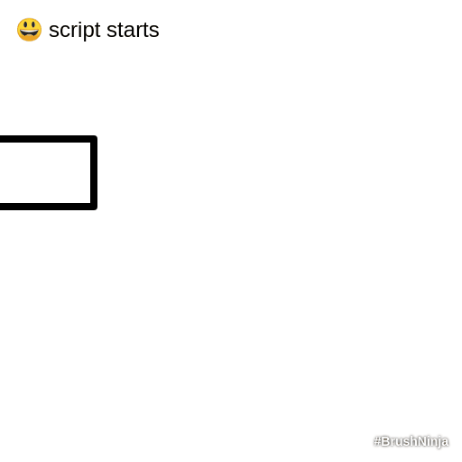

#1 - Call Stack and me
In last article we have discussed how the JavaScript Engine reads through our code and executes it. A lot of guides and courses treat this information as an advanced topic and jumps straight into coding. If I had the knowledge of this processes when I started it would be so much easier for me to understand why things happen as they happen. We went through the very fundamental process in JavaScript Engine runtime, now let’s have a closer look how Engine runs your code.
Today we will learn something about Call Stack.
Call Stack
The Call Stack is a mechanism, which allows JavaScript Engine to keep track of it’s location inside a script. It is a data structure. Array of some kind. Array where things are getting pushed into it and popped out.
As mentioned in the last article, after everything is set up, the Execution Phase starts. Using Hoisting it can access any function within your code. So if you have nested function inside other function, and that function has many more of them inside, how will JavaScript understand what is it location now within your code?. This is where Call Stack kicks in.
Let’s stack those calls.
Imagination ON
You are function. Let’s say, your name is Tom. You need to go to the mall, but you can’t find the keys from his car. You searched all the house upside down but failed to spot them. Maybe your sister Amy took them or brother Ryan? Let’s find out. You pick up the phone and call your sister function Amy.
- Hey Amy, have you seen my keys?
- Let me have a look. No, I can’t find them either. Hold the line, I’ll call Ryan.
You are waiting for Amy to complete the execution of a task she has. Your family has strict rules, you cannot just proceed to anything else, untill Amy returns to you with the answer.
- Hey Ryan, it’s Amy. By any chance, have you seen Tom’s keys?
- Hello Amy. Just give me a moment, I’ll have a look.
Now, Amy waits for Ryan to complete his task and return to her. You are still waiting for both of them, you know the rules. You see, the calls are in the stack.
- Yeah I found them Amy. I’ll return them to you, just pass it back to To, okay?
- Thanks! Sure, I’ll do.
Now, the execution of Ryan’s task is completed and he is out of the stack.
- Hey Tom, we found the keys, I’ll return them to you now. Thanks for waiting!
- Oh, that’s sweet, thanks Amy!
The execution of the Amy’s task is also over. She hangs the phone and out of the stack now. Last thing is for Tom to return to his task, to go to mall and complete it.
Imagination OFF
Back to JavaScript.
When first function is invoked it is pushed to Call Stack as a foundation. If there are no nested functions inside the first one, once it is completed it is removed from the stack. Function are pushed and popped off the stack in the Last In First Out way. Imagine a stack of dirty plates at the sink. Last plate put on top will be the first plate to get washed.
JavaScript Engine is a signle threaded and it’s syncronous nature means that is can do only one thing at a time. Untill that task is over, the Engine can not proceed with next one.
Let’s take a simple nested function as an example:
1 | function main() { |
Now we are JavaScript Engine and we are going to build the stack. First function to add to our stack will be function main. main calls function one, it is added to the stack and function main waits for it to finish. one calls two and then two calls three. What will be the last function added to the stack?
If you say three you are almost there. Actually, when function three is added to the stack it also calls function console.log (we will not go deep to the implementation of console.log to simplify) and this console.log is the last function we add to the stack. Let’s have a look at our stack, before we start popping things off it.
You can see, that other console.log were not added to the Call Stack just yet. As mentioned earlier, JavaScript Engine will not proceed with the next task, until first one is completed.
Okay, now we start popping things off the stack. Is it only popping things off or we will push something more into the stack?
console.log on top of the stack has printed in the console and was popped off the stack. Function three has no more tasks and also popped off the stack. Next, function two still has another function inside - the console.log. Now, this console.log will be pushed into the stack on top and all other functions will wait for it to complete. Things are going to be popped off and pushed into, untill the reach the last main function, after it’s execution, the stack will be empty and JavaScript will proceed to execute next portion of your code.
The Call Stack can get very complicated and it may become very hard to track things. The more functions are nested inside other functions the harder it gets.
Thing to note. All this process is lightning fast unless heavy computation is involved
Stack Overflow
Except for being a developers Mecca, stack overflow is the process when your function calls itself and does not have any exit point. I called it process, but it is actually a tool which spots this infinite recursion and prevents your computer to blow up :D The Call Stack will grow and grow, until it reached the limit of the memory and cannot grow anymore. This is where you will get stack overflow error.
Summary
Is it better now? I hope it is. Call Stack is only one of many things happening under the hood when you run your code, but it is extremely important to understand in which order your functions run and how JavaScript Engine treats them.
The implementation in the imaginary world and example is the synchronous. JavaScript has evolved a lot and asynchronous approach is the new gold standard. We will get to that point in future articles, but understanding of synchronous way is a must. I want to make sure that we will have everything necessary to proceed with more advanced topics.
A few words on recursion
I have mentioned recursion at the stack overflow section and even we are now ready to get familiar with this concept, I would suggest to keep it for later. Recursion is just a tool and it is not required right now for understanding of the basics.
Please, imagine what you are reading. Even though the pictures are provided, try to use your imagination. Create this blocks in your head and go through the example, stack them on top of each other and pop them off when they are done.
As usual, comment if something is wrong, contact me if you need clarification, suggest if you want!
See you around.